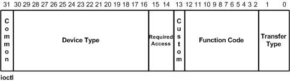

Steward
分享是一種喜悅、更是一種幸福
驅動程式 - Kernel Mode Driver Framework (KMDF) - 教學說明 - 6. User Application透過IOCTL跟驅動程式溝通
參考資訊：
https://learn.microsoft.com/en-us/windows-hardware/drivers/kernel/defining-i-o-control-codes
Input Output Control(IOCTL)是另一種可以跟驅動程式溝通的方式，User Application透過呼叫Win32 API DeviceIoControl()跟驅動程式溝通(EvtIoDeviceControl())並且帶入命令參數，驅動程式可以依據不一樣的命令做不一樣的事情，而除了命令參數以外，DeviceIoControl()還可以傳入Input和Output Buffer，Buffer的處理方式也是需要做設定才可以使用，處理方式分為Buffered、Direct和Neither三種方式，感覺是不是跟File的Buffer設定方式很相似呢？沒錯，基本上是一樣的，雖然司徒講得有點複雜，不過，只要把Buffer的設定方式搞懂後，使用者就可以發現，整個運作原理是相當容易理解的
使用者可能好奇想問，EvtIoRead()、EvtIoWrite()是否可以取代EvtIoDeviceControl()的功能呢？答案：肯定是可以的，只要把資料做編碼，功能上是可以取代的，只是這樣的作法，把資料傳輸跟控制應用都綁在一起，失去原有的設計本質，因此，如果以資料為傳輸目的，建議使用EvtIoRead()、EvtIoWrite()，而以控制應用為目的時，則建議使用EvtIoDeviceControl()的方式
IOCTL命令是指什麼東西呢？其實就是一個編碼後的32 bits的數值，定義如下：
#define CTL_CODE(DeviceType, Function, Transfer, Access) (((DeviceType) << 16) | ((Access) << 14) | ((Function) << 2) | (Transfer))
IOCTL欄位

對應的溝通管道
| Win32 API | Kernel Callback |
|---|---|
| CreateFile() | EvtDeviceFileCreate() |
| DeviceIoControl() | EvtIoDeviceControl() |
| CloseFile() | EvtFileClose() |